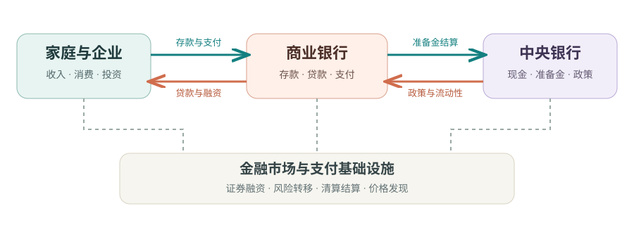

货币银行学 · 第 01 章
货币银行学究竟研究什么？
从一笔日常支付出发，理解货币、商业银行、中央银行、金融市场与实体经济之间如何连接，以及货币政策怎样沿着金融体系传导。
你用手机支付一杯咖啡，屏幕上只出现“支付成功”。但在这几个字背后，至少发生了三件事：你的银行存款减少，商家的银行存款增加，银行之间还需要通过支付清算安排完成资金结算。若把视角再向外扩展，银行的贷款、企业的投资、家庭的消费和中央银行的政策也都连接在同一套金融体系中。
一笔付款背后的系统
货币银行学研究的不是孤立的纸币或某一家银行，而是一个核心问题：经济中的购买力如何被计价、支付、储存、借出和重新配置？当资金从储蓄者流向借款者时，谁承担风险？当中央银行改变政策利率时，为什么房贷、企业融资、汇率和资产价格可能跟着变化？
可以先把一笔支付放进更大的系统中观察。家庭和企业通过存款完成交易；商业银行提供账户、支付和信贷服务；中央银行提供现金与银行间结算资产，并实施货币政策；金融市场则让企业、政府和投资者通过证券等工具进行融资与风险配置。

因此，研究货币银行学时，需要同时观察资产负债表、交易关系、制度规则和行为预期。只看货币总量，无法直接判断资金最终流向；只看银行利率，也无法解释所有企业和家庭为什么会借贷或储蓄。
现代经济中的货币：不只是钱包里的现金
货币是一种被广泛接受、用于计价和支付的金融工具。它降低了交易双方必须相互匹配需求的成本，也让价格、债务和跨期合同能够使用共同单位表达。货币的具体形态会变化，但其可接受性依赖制度安排、支付网络和社会信任。
在现代银行体系中，至少要区分三类货币性负债：
| 形态 | 谁的负债 | 主要持有人 / 用途 |
|---|---|---|
| 现金（纸币与硬币） | 中央银行发行的货币 | 公众可直接持有并用于支付 |
| 商业银行存款 | 商业银行 | 家庭和企业用于转账、支付与储蓄 |
| 银行准备金 | 中央银行 | 商业银行持有，用于银行间结算及满足流动性要求 |
银行准备金虽然是基础货币的重要组成部分，却不是家庭能够像现金一样直接持有和支付的账户余额。商业银行存款与央行准备金也不是同一种负债：前者是客户对商业银行的债权，后者是商业银行对中央银行的债权。英格兰银行对现代货币的说明也强调，现金、银行存款和央行准备金对应不同部门的负债关系[1]。
法律地位与统计口径不是一回事。在中国，人民币是法定货币，人民币用于境内公共和私人债务支付的法律地位由《人民币管理条例》规定[2]。但货币供应量统计还要回答“哪些金融工具在多大程度上具有货币性”，因此 M0、M1、M2 并不等同于所有人民币资产。
银行如何创造存款：从一笔贷款看资产负债表
常见误解是：银行先收下储户的 100 元，再把其中 90 元贷给别人，因而只能把既有存款“转手”。这能帮助初学者理解资金中介，却不是现代银行贷款创造存款的完整会计描述。
假设一家银行批准企业一笔 100 万元贷款，并把贷款金额记入企业的活期账户。贷款发放时，银行资产端增加 100 万元贷款债权，负债端同时增加 100 万元企业存款。企业使用存款付款后，存款可能转到另一家银行的客户账户，银行之间再通过准备金等结算资产完成清算。
| 银行资产端 | 银行负债端 |
|---|---|
| +100 万元贷款（对企业的债权） | +100 万元存款（对企业的负债） |
这笔贷款创造了新的银行存款，但没有凭空创造净财富：借款人同时承担偿还本金和利息的义务，银行也承担违约风险。银行能否继续扩张贷款，还受资本充足率、流动性、融资成本、监管要求、借款人信用和合格贷款需求等因素约束。
因此，固定准备金乘数模型可以作为理解货币数量关系的简化练习，却不应被当成“银行把准备金机械乘以某个倍数就能放贷”的现实操作说明。英格兰银行的研究明确指出，现代银行并非简单地把储户存款贷出，也不是机械地把央行货币乘数放大成贷款和存款[3]。
中央银行与货币政策：怎样影响融资条件
中央银行处在货币体系的核心位置，但它通常不直接替家庭决定是否买房，也不逐笔审批企业贷款。它通过政策利率、公开市场操作、准备金制度、流动性工具和沟通预期等方式，影响银行体系的资金价格与金融条件。中国人民银行法列明了准备金、基准利率、再贷款、再贴现和公开市场操作等货币政策工具[4]。
政策影响实体经济的路径并非只有一条。下面选择不同渠道，观察政策信号如何传导；这些路径可能同时发生，方向和强度也会随经济环境而变化。
交互练习：选择一条政策传导渠道
选择渠道，查看它通常经过哪些中间环节。图示是机制解释，不是对任何一次政策行动效果的预测。
利率渠道：政策利率影响市场利率和融资定价，进而改变消费、投资与资产估值。传导通常存在时滞，也会受到风险溢价和银行定价影响。
政策工具、操作目标、中间目标和最终目标必须区分。例如，央行可以调整短期政策利率或银行体系流动性，但通胀和就业还受到供给冲击、财政政策、国际价格、生产率和公众预期等因素影响。货币政策是重要影响因素，不是对所有宏观结果的单独控制器。
分析货币金融问题的六个问题
- 谁在记账？明确资产、负债和合同双方，区分央行、商业银行、政府、企业与家庭。
- 什么被当作货币？分清现金、银行存款、准备金和其他流动性资产。
- 资金如何流动？观察支付、贷款、证券发行、清算和偿还。
- 价格由什么构成？识别政策利率、期限溢价、信用风险、流动性溢价和通胀预期。
- 制度约束是什么？核对法律、监管、资本、流动性与汇率制度。
- 证据能支持多强的结论？区分会计恒等式、理论机制、相关性和因果识别。
三个常见误读：货币供应量增加不等于等额的消费价格上涨；银行创造存款不等于没有风险或没有约束；央行降息不保证所有借款人的贷款利率同步、等幅下降。
核心结论
货币银行学研究购买力如何被计价、支付、创造和配置。现代货币既包括中央银行发行的现金，也包括商业银行的存款负债；银行贷款能够同时创造存款，但受资本、流动性、风险和监管约束；中央银行则通过政策工具影响金融条件，并沿着利率、信贷、汇率和预期等渠道作用于实体经济。
理解任何金融现象，都应回到资产负债表、交易关系和制度约束，而不是只盯住某一个数字或市场口号。
Worked reasoning
算一遍：同一笔贷款跨行支付，银行体系的存款会消失吗？
教学示例：银行 A 为企业新发放 100 万元贷款，先记为“贷款资产 +100、企业存款负债 +100”。企业随即向银行 B 的供货商付款 100 万元：银行 A 的客户存款减少 100，银行 B 的客户存款增加 100，银行 A 向银行 B 转移结算准备金（假设准备金充足）。银行体系新增的存款仍为 100 万元，只是从 A 转到 B；银行 A 的贷款资产仍在。
这与“银行直接把一位储户已有的 100 万元转给另一位储户”是不同的初始操作。要核查结论，应分别画 A、B 与央行的资产负债表，而不是把银行准备金和公众存款相加。参见英格兰银行的货币创造研究。
此处为明确给定条件的教学推演；结论不自动适用于不同统计口径、国家规则或未来市场环境。
Connect the ideas
把这个问题放进更大的金融系统
下面是与本节机制直接相关的三个问题。每个链接都进入另一篇文章的具体解释位置；当前文章无需依赖它们即可独立理解。
参考资料
- Michael McLeay, Amar Radia & Ryland Thomas, Bank of England, Money in the modern economy: an introduction, 2014.
- 国家市场监督管理总局，《中华人民共和国人民币管理条例》，第三条。
- Michael McLeay, Amar Radia & Ryland Thomas, Bank of England, Money creation in the modern economy, 2014.
- 《中华人民共和国中国人民银行法》，第二十二条：货币政策工具。